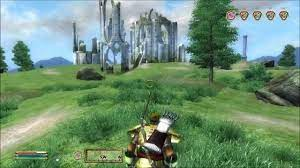

Oblivion
The Elder Scrolls IV: Oblivion is a 2006 open-world action role-playing video game developed by Bethesda Game Studios and published by Bethesda Softworks and the Take-Two Interactive division 2K Games. It is the fourth installment in the Elder Scrolls action fantasy series, following 2002's The Elder Scrolls III: Morrowind, and was released for Microsoft Windows and Xbox 360 in March 2006, and on PlayStation 3 in March 2007, with a mobile version of the game released on May 2, 2006.
Taking place within the fictional province of Cyrodiil, Oblivion's main story revolves around the player character's efforts to thwart a fanatical cult known as the Mythic Dawn that plans to open portal gates to a demonic realm known as Oblivion. The game continues the open-world tradition of its predecessors by allowing the player to travel anywhere in the game world at any time and to ignore or postpone the main storyline indefinitely. A perpetual objective for players is to improve their character's skills, which are numerical representations of certain abilities. Early in the game, seven skills are selected by the player as major skills for their character, with those remaining termed as minor skills.
Development for Oblivion began in 2002, directly after the release of Morrowind, opting for tighter pacing in gameplay and greater plot focus than in past titles. To design the graphics, Bethesda used an improved Havok physics engine, high-dynamic-range lighting, procedural content generation tools that allowed developers to quickly create detailed terrains, and the Radiant AI system, which enabled non-player characters (NPCs) to make choices and engage in behaviors more complex than in past titles. The game features fully voiced NPCs—a first for the series—and the music of award-winning composer Jeremy Soule.
Upon release, Oblivion was well received by critics and has won a number of industry and publication awards. It was praised for its impressive graphics, expansive game world, and schedule-driven NPCs, and is now considered one of the greatest games ever made. It was successful both commercially and critically. Following a number of smaller content releases, Bethesda released two expansion packs for the game, Knights of the Nine and Shivering Isles, which were bundled with The Elder Scrolls IV: Oblivion Game of the Year Edition which was released in 2007, and later re-released as a fifth-anniversary edition in 2011. Also released in 2011 was the game's successor, The Elder Scrolls V: Skyrim, set 200 years after Oblivion.